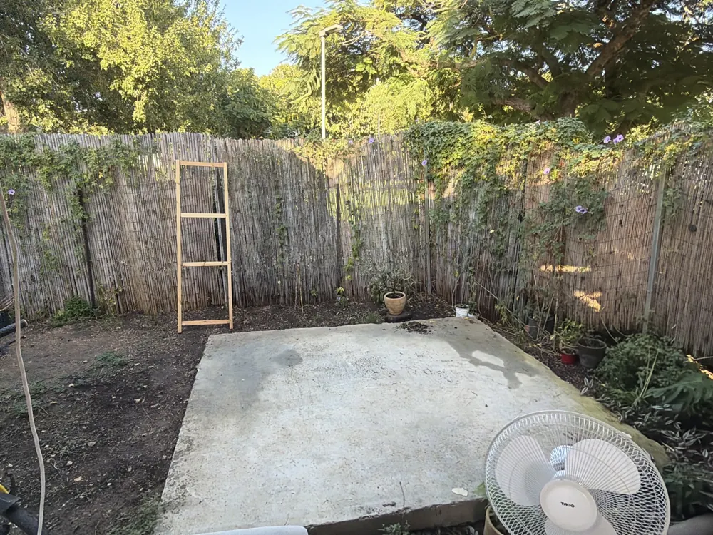

פרק א'על הגינה
גינת קוטג' עם פרחים גבוהים ודרמטיים, הרבה בצלים, וגוונים של סגול וורוד.

צמחי בר שקיבלו אישור להישאר:
פרק ב'מי גר בגינה
לחצו על צמח כדי לראות מתי נשתל, מאיפה הגיע, מה קורה איתו עכשיו ומה מעניין בו.
פרק ג'איך הגינה גדלה
מה קרה בגינה מאז שתילת הבצלים הראשונים.
פרק ד'גלריה
רגעים מהגינה. לחצו על תמונה להגדלה.
פרק ה'מה פורח מתי
לוח השנה של הגינה. לחצו על חודש כדי לראות מה פורח בו.
פריחה / פרי
עלווה בלבד
החודש הנוכחי
צפי לאביב
הערכה ריאלית לשנה הראשונה, אחרי איבודים לחלזונות, ריקבון ונבטים שלא שרדו.
~190צמחים פורחים באביבבלי החמציץ, הפרגים שזרעו את עצמם והצמחים הקיימים
פקעות ובצלים
מזרעים
- הספירה היא של צמחים, לא של פרחים. נרקיס אחד נותן אשכול של 5–10 פרחים, ואפון ריחני או קצח פורחים שוב ושוב, כך שבפועל יהיו הרבה יותר פרחים.
- תורמוס ההרים הוא צמח חד-שנתי, כך שהוא אמור לפרוח כבר באביב הזה, ואם ישאירו לו תרמילים להבשיל הוא יזרע את עצמו לשנה הבאה.